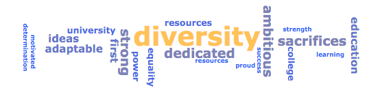
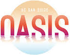
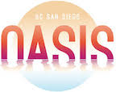

According to the National Center for Education Studies, in Fall 2018 less than 25% of College and University faculty
were people of color. There is a visible lack of diversity in faculty at universities throughout the United States.
There is a need for educators that reflect all colors.
In order to address this problem, we need to see where it stems from, the pipeline problem.
The pipeline problem is the issue that a lot of students drop out at different stages in the process of becoming a professor.
This can include dropping out during high school, undergraduate level, and graduate level.
In this website, you are able to find data that supports this claim, as well as resources that
are available for underrepresented students.
Whether you are in STEM, Humanities, or Social Sciences, there are resources out there to help students go to college and
succeed in college.
Our main data source was the National Science Foundation.
In my experience as an undergraduate, I have visibly seen a lack of diversity throughout the professors who
stand in the front of the lecture hall to teach a class, or in today's day host a Zoom call. This issue
is more visible in STEM classes at universities.

There are many ways to support students of color and this website is one way! Click through the tabs above
to explore the data analysis on the lack of diversity at universities and for a handful of helpful resources
to help students succeed including: mentorships, scholarships, fellowships and more!
Data Analysis Regarding the lack of diversity in Faculty
In order to fix the issue of lack of diversity within faculty, we have to start from the root of the problem.
That includes analyzing the lack of diversity in universities within students.
Helpful Resources
Click on the appropriate boxes below to explore a range of resources.
Mentorships
AI Paths: supports minorties in Data Science and AI.
Oasis at UCSD: provides mentorship, tutoring, and a place of belonging for students.
Idea Engineering Student Center at UCSD: professional mentorship, a place to build community, and tutoring for underreperesented engineering students at the
Jacobs School of Engineering at UCSD.
Stemtorship Network: space where marginalized undergraduate students can connect to build communitiy.
Hispanic Scholarship Fund: provides national scholarships for hispanic college students as well as professional growth opportunities and conferences.
The Beinecke Scholarship: encourage and enable highly motivated students to be courageous in the selection of a graduate course of study in the arts, humanities and social sciences.
Virtasant Inc.: A range of scholarships for underreperesented students in Technology.
Fellowships
California Alliance: creates pathways to faculty to promote graduate school and research opportunities.
National Science Foundation: Graduate Research Fellowship Program: encourages members of underrepresented groups in their graduate training in Science, Technology, Engineering, and Mathematics (STEM) fields.
CoB-KIBM: Paid internship for students from racial and ethic underreperesented groups.
Caltech WAVE Fellows Program: provides support for underreperesented students in STEM with a summer research project and intending to pursue a Ph.D.
 
